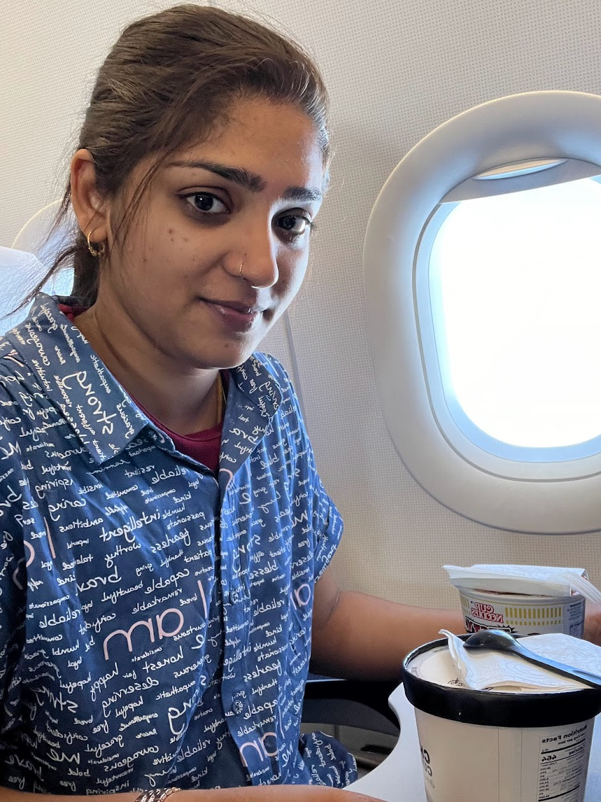

Sandhya Kumar

Summary
I am innovative software developer who has 5+ years of IT experience with exceptional skills in Analysis, Object Oriented Design, Development,Implementation. and Testing of Web Applications.
-Experience on implementation of big data systems, 3+ years experience on Html, CSS and Javascript. Full stack development experience with 2+ years on Angular JS, Node JS and Express framework. Solid experience on front-end development framework. Short experience with Bash and devOps fundamentals. I have a strong problem-solving, organizing, communication and planning skills, with ability to work in team environment. - Good written and oral communication skills and Interpersonal skills with a strong ability to excel through collaboration with team members.
Highlights
- Html5
- CSS
- Javascript
- Bootstrap
- Angular JS
- React
- Redux
- Node JS
- Express JS
- SQL
- Python
- Git and GitHub
- Advanced PostgreSQL
Experience
Software Engineer
Feb2019- Jan 2023, TCS, Chennai,TN, India
- Developed a smart reporting application. Lead a 4 member team from the proposal of the idea to developing the logic and designing of the application. (Javascript and HTML5 mainly used with advanced level and the back end was done with ASP.net)
- Collaborated with project managers to select ambitious, but realistic coding milestones on pre-release software project development.
- Designed intuitive graphical user interfaces to improve user experience.
Project Management Executive
Jan 2018-Feb 2019, TCS , Chennai,TN, India
- Projects are progressing within the budget and timeline.
- Resource utilization is done efficiently.
- Risk assessment is done across the projects.
- Milestones being achieved on time or not.
- Financial Data such as budget, marginal cost, actual cost. Progress on mitigation of the risks. Status of the deliverables.
Education
Bachelor of computer Science
Sri Venkateshwara. University,Tirupathi- May 2017.
- Majored in Advanced application development title - Distributed database integration with web service
- Completed professional developement in designing Web Applications
Certificates
- Codecademy Full stack developer certificate (Includes 6 individual front-end and back-end certifications). - MongoDB for Node.js Developers
- python Certificate.a valuable resource for solving programming challenges, and for developing innovative solutions.
Accomplishments
- Star of the Month Award given by TCS for outstanding contributions for project development and deployment for production environment.
- Organized and coordinated Tech Event'19 in TCS and demonstrated on Open- Source software licenses.
other
My Hobbies